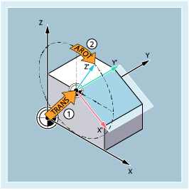

Der Frame ist eine in sich geschlossene Rechenvorschrift, die ein kartesisches Koordinatensystem in ein anderes kartesisches Koordinatensystem überführt.
Der Basisframe beschreibt die Koordinatentransformation vom Basiskoordinatensystem (BKS) in das Basis-Nullpunktsystem (BNS) und wirkt wie die einstellbaren Frames.
Weitere Informationen:
→ Kapitel " "
Einstellbare Frames sind die mit den Befehlen G54 bis G57 und G505 bis G599 aus jedem beliebigen NC-Programm abrufbaren einstellbaren Nullpunktverschiebungen. Die Verschiebewerte werden vom Bediener voreingestellt und im Nullpunktspeicher der Steuerung abgespeichert. Mit ihnen wird das einstellbare Nullpunktsystem (ENS) festgelegt.
Weitere Informationen:
→ Kapitel ""
→ Kapitel ""
Manchmal erweist es sich als sinnvoll bzw. notwendig, innerhalb eines NC-Programms das ursprünglich gewählte Werkstück-Koordinatensystem (bzw. das "Einstellbare Nullpunktsystem") an eine andere Stelle zu verschieben und ggf. zu drehen, zu spiegeln und / oder zu skalieren. Dies erfolgt über programmierbare Frames.
Beispiel:
① | Programmierbarer Frame 1: Verschieben des Nullpunkts des Werkstückkoordinatensystems (WKS) |
② | Programmierbarer Frame 2: WKS-Drehung zum Ausrichten einer Ebene parallel zur gewünschten Arbeitsebene |
Darüber hinaus besteht die Möglichkeit, die Ausrichtung des Werkstückkoordinatensystem durch eine Frame-Drehung an die Ausrichtung des Werkzeugs oder Werkstücks anzupassen.
Weitere Informationen:
→ Kapitel "Frame-Drehung zum Ausrichten am Werkzeug oder Werkstück (TOFRAME, TOROT, PAROT)"
Für bestimmte Vorgänge bei der Programmabarbeitung, wie z. B. dem Anfahren des Werkzeugwechselpunkts, ist es erforderlich, einzelne Frame-Komponenten vorübergehend zu unterdrücken.
Weitere Informationen:
→ Kapitel "Frame abwählen (G53, G153, SUPA, G500)"